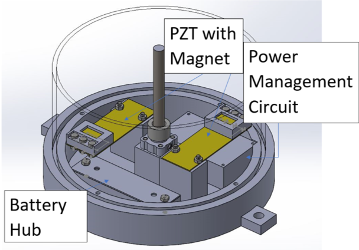
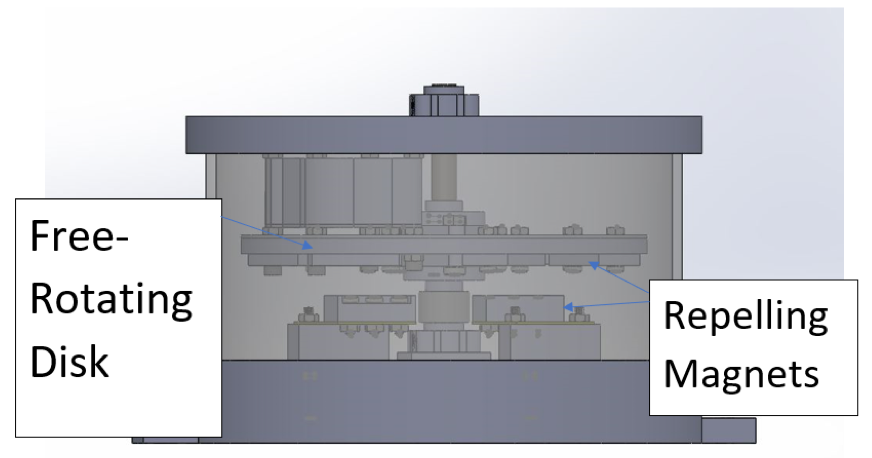
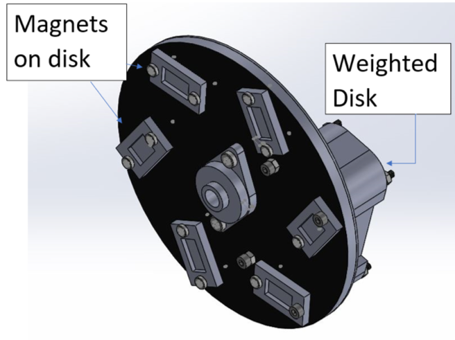

<!DOCTYPE html>
<html lang="en" dir="ltr">

  <head>
    <meta charset="utf-8">
    <title>Miles Smith || UMBC</title>
  </head>
  <body>
  </body>
</html>

<head>
  <link rel="stylesheet" href="style.css" type="text/css">
</head>

<header>
  <h1>Welcome to Miles's Personal Webpage!</h1>
</header>

<body>
<p>
I am a senior mechanical engineering major at the University of Maryland, Baltimore County (UMBC).  As an undergraduate,
I have been involved in various research and design projects via collaboration with the Energy Harvesting and Design
Optimization (ED) Lab at UMBC led by Dr. Soobum Lee, the UMBC Mechanical Engineering department, and the research lab of
Dr. Joel Ducoste at North Carolina State University that have helped guide me in my professional development and have
furthered me as an engineer.
<p>
  <h2>ACTIVEcharge</h2>
  <table
  style = "width:100%"
  <thead>
    <h3>Prototype designs of a Piezoelectric Energy Harvesting System</h3>
  </thead>
    <tr>
      <td></td>
      <td></td>
      <td></td>
    </tr>
  </table>
  <p>
  ACTIVEcharge is a <b>piezoelectric energy harvesting system</b> currently in development that originated from research conducted
  in the ED Lab at UMBC.  The purpose of ACTIVEcharge is to reduce the cost to replace <b>structural health monitoring sensors in wind turbines</b>
  to reduce the overall operation and maintenance costs associated with wind energy and promote the commercial viability
  of wind energy.
</p>
<p>
  ACTIVEcharge aimed to determine if enough power could be gathered through a piezoelectric energy harvesting system.
  The fundamental theory that guided this research is the <b>piezoelectric effect</b>, which is the ability of certain
  materials to generate an electric charge from mechanical stress.  The ambient energy from the rotation of a wind turbine was
  used to power the energy harvesting system by indirectly applying stress to a piezoelectric material creating voltage and
  electrically converted to harnessable power.
</p>
<p>
  My involvement in the project began in the early phases of the project.  Throughout the timeline of the project I had
  involvement in the development of this project included researching and developing non-destructive techniques for
  harnessing the rotational energy of a wind turbine, designing and manufacturing the prototype, and testing and
  power optimization of the energy harvesting system.  During this time period, we transitioned from a contact-driven
  technique for applying stress on the piezoelectric material to a non-contact technique that utilized magnetic forces.
  We also developed and tested a functional prototype to provide structural and funcitonal analysis.  As a result of this
  study we were able to further the research and begin development of the current product, ACTIVEcharge.
</p>
  <h2>TalkBox</h2>
  <h2>Lipid Optimization for Biofuels</h2>
</body>
